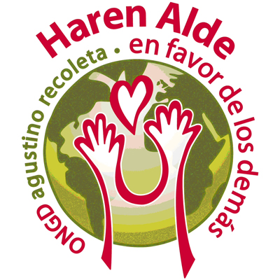
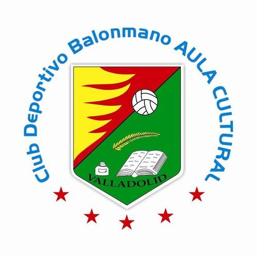

Vicente Martínez Franco
-
¿Who I am?
-
I am an estudent of informatic engineering, with the specialzation in computer science. Interested in computer graphics, specially those subjects related with virtual reality and augmented reality, as well as in computer vision and data mining
I am actually studying in "Universidad de Valladolid" (Valladolid university) my forth year, and also working as a teacher of educational robotic for kids.
-
Skills -
- Computer graphics: still in learning process. WebGL and OpenGL.
Computer vision: Self-taught. I use the OpenCV framework for python and C++.
Data minig: At a medium level, still learning in university subjects.
Web development: specially front-end development.Bootstrap, javascript and jquery (jquery in progress), JSP pages...
Data visualization: more focused in the technicall side. Tools as D3.
Object Oriented Programming: medium-advanced level.
Databases: basic knowledge. Specially focused on designing. Work with DB based on SQL, particularly MySQL
Diverse programming languajes: Java, Python, C, Javascript...
- Computer graphics: still in learning process. WebGL and OpenGL.
-
Profesional profile -
-
Experience
-
Date Position Company 
October 2016 - Ongoing Educational robotic, game design and 3d printing teacher for kids. Rockbotic
-
Volunteering
-
Date Position Organization  September 2015 - Ongoing Monitor Haren Alde  November 2014 - Ongoing Collaborator. Various labors. Club Deportivo Balonmano Aula Cultural.
-